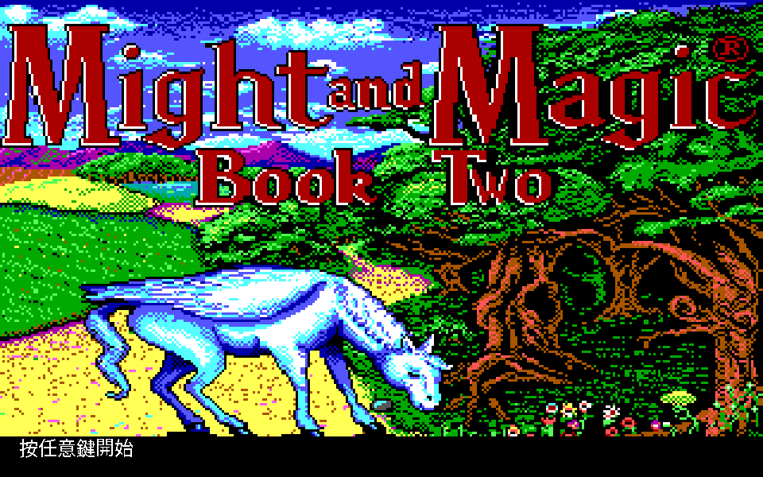

序言與科隆的歷史
上冊第一章是序言，第二章是「科隆的歷史 History of CRON」，加起來十頁。 這兩章不是背景裝飾 —— 四大元素之王、四爪水晶球、卡隆國王、亡命沼澤 全部在這裡交代過，而它們就是這一代的主線。

序言：柯拉克失蹤
以柯拉克（Corak the Mysterious）的徒弟、年輕人昆登（Gwyn don the Young）的
第一人稱報告寫成。手冊把 Gwyndon 排成中間帶空格的 Gwyn don。
- 柯拉克是「征服者卡隆國王以外最具有威力的魔術師（Archmage）」。
- 他發現有個來自另一現實世界的罪犯正潛逃進科隆（Cron）。
- 昆登偷聽到柯拉克自語：科隆已和一個名為席頓（Sheltem）的危險異形脫離了聯合狀態； 又提到「在可怕的波濤及無情的破壞橫掃整個科隆大地前，會有一神聖的鬥士重整整個大地」。
- 柯拉克舉止反常，進出研究室後常有形貌上的改變 —— 有一次「出來時卻好像到過 墨里休閒小島（Murray's Resort Isle）作了一星期日光浴般，全身都變成褐色了」。
- 他取出「一隻我從未見過的奇異四爪棒」施法，在一聲巨響後消失。
- 一星期後潘赫特城主（Lord Pinehurst）來訪，同樣在研究室中消失。 隔日城主來信要昆登前往潘赫特城堡繼續學習。
序言裡出現的三個東西後來都在遊戲裡：席頓是最終地下城控制室的守門者， 四爪棒對應四隻元素之爪，莫里島是 B4 那座設施島。
科隆的歷史
由柯拉克蒐集，昆登在皇家豪華宮殿（Luxus Palace Royale）的研究室中找到。
四大自然種族
天地之間原本只有太虛。混沌中出現大量的水，和以太（ether）混在一起，誕生了奇異的種族。
| 族 | 首領 | 手冊寫的角色 |
|---|---|---|
| 水 | 亞郭蘭大 Acwalandear | 「所有水種（Water Kings）中最強大和最高貴者」，控制諸神約九十年 |
| 風 | 雪文 Shalwend | 風之精靈的首領，恐怖而邪惡。風水戰爭打了一個世紀 |
| 火 | 皮倫奈斯特 Pyrannaste | 水神造出來的最後武器，八十年奴役後反抗 |
| 土 | 葛拉格 Gralkor the Cruel | 自稱大地之尊，凶猛入侵科隆 |
三族聯手對付土族的方法寫得很具體：水浸透土族 → 火烘成乾泥 → 風吹散。 但為時已晚 —— 土族已聚集完成一塊浮於水上、不怕火也吹不散的大陸。 經三十年抗爭失敗，大地之尊主宰了這片日後稱為科隆的地方。
紀元五百年，葛拉格與土族建造固定的陸地區域；其後約一百年間四族共同修整， 形成日後所知科隆的實體陸地部份。
這四位就是遊戲裡四個元素界的元素之王。
雜誌轉錄的名字拼法與手冊略有出入（Acwalander／Acwalandear、Shadwoed／Shalwend），
兩種都列在元素界那一頁。
人類與卡隆國王
第七世紀，一群小形生物在葛拉格的作品上繁衍，即人類。手冊的說法很有畫面：
水只能從他們身上滴落，風只能吹繞過，火能燒傷但極少致死，土地只能被他們踐踏。
人類最重要的能力是施展法術。七十年後已能對抗諸神。最具威力的法師聚集在 古代之島（Isle of Ancients），合力創造了一顆能源水晶球： 底座有四爪，每一爪針對一種自然力而設，能控制其所代表的諸神。
第八世紀末葉，一個魔法不高但充滿勇氣的人卡隆（Kalohn）測試水晶球並平安存活。 他登上科隆最高的山峰向四大主宰挑戰、戰勝諸神，把四大神族放逐到大陸的四個邊區， 以各種障礙囚禁；四個爪子分別以水、風、火、土的形態出現看守，水晶球留在自己身邊。 這場戰鬥使整座高山變成了死城（Dead Zone）大坑洞。
第九世紀中葉諸神反擊。亞郭蘭大創造出一具巨大怪獸並注入子民生命、賦予火 —— 史上第一頭火龍。卡隆國王在富足的大草原（Savannah of Plenty）與火龍相遇， 水晶球已幾乎暗淡無光，他戰敗；最後試圖以法術形成水牆保護自己， 卻造成大洪水淹沒了自己和整片草原。
富足的大草原自此變成「亡命沼澤」（Quagmire of Death）， 水晶球據傳仍藏在沼澤某處，至今無人尋獲。
火龍經由一度關閉的走廊地帶進入科隆報復。卡隆國王的女兒拉曼達公主（Princess Lamanda） 成為大地的臨時主宰，文明水平大幅下降。
現在是混亂的十世紀，劍及巫術取代原本生活中的法律及秩序。
這一段對照到遊戲裡
手冊的歷史章與攻略的主線是同一件事，只是一個從神話那頭寫、一個從玩家這頭寫：
| 歷史裡的 | 遊戲裡的 |
|---|---|
| 四大元素之王被放逐到大陸四角 | 四個元素界，入口在 A1、A4、E1、E4 的角落 |
| 四爪各以一種形態看守 | 四隻元素之爪，插碟才拿得到 |
| 卡隆國王與火龍決鬥 | C4-14,5「800 年卡隆王與百萬巨龍決鬥的地點」 |
| 卡隆的女兒拉曼達成為臨時主宰 | D2-14,14 的皇宮，主線樞紐 |
| 席頓從另一個現實潛逃進科隆 | 最後地下城控制室的守門者 |